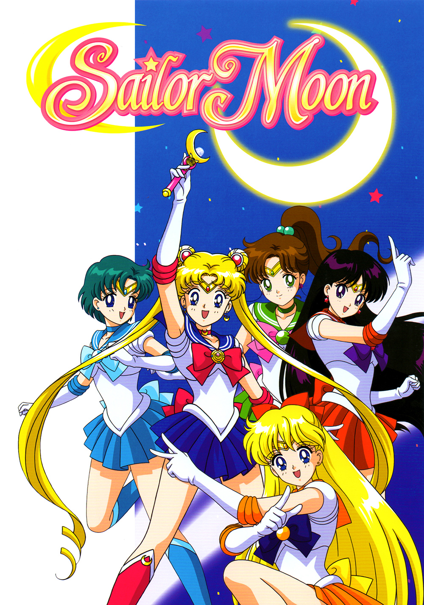
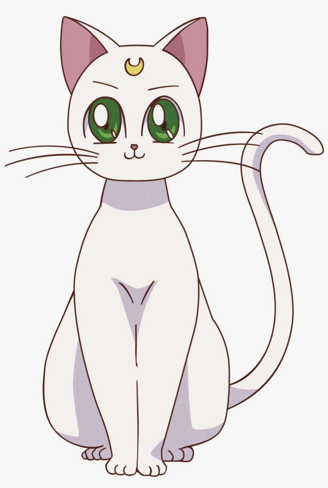
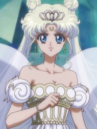
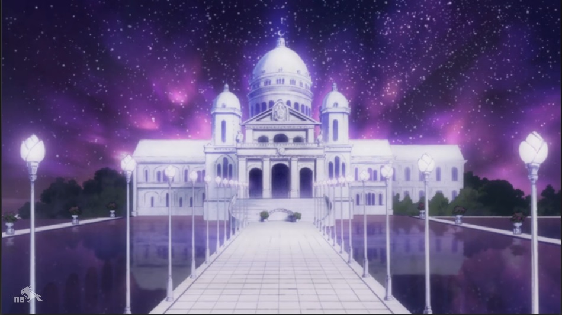

I am Sailor Moon, champion of justice! On behalf of the moon, I will right wrongs and triumph over evil, and that means you! - sailor moon”
One day in Juban, Tokyo, a middle-school student named Usagi Tsukino befriends Luna, a talking black cat who gives her a magical brooch enabling her to transform into Sailor Moon: a soldier destined to save Earth from the forces of evil. Luna and Usagi assemble a team of fellow Sailor Guardians to find their princess and the Silver Crystal. They encounter the studious Ami Mizuno, who awakens as Sailor Mercury; Rei Hino, a local Shinto shrine maiden who awakens as Sailor Mars; Makoto Kino, a tall and strong transfer student who awakens as Sailor Jupiter; and Minako Aino, a young aspiring idol who had awakened as Sailor Venus a few months prior, accompanied by her talking feline companion Artemis. Additionally, they befriend Mamoru Chiba, a high school student who assists them on occasion as Tuxedo Mask.
Artemis
Artemis is a white tomcat with short fur and blue eyes. Like Luna, he has a golden crescent moon on his forehead to show his allegiance to the Silver Millennium. He is slightly bigger than his counterpart.Artemis has the odd habit of turning off Minako's alarm clock, hugging it and carrying it into her bed, thus being the major reason for Minako being late for school more often than not.
Queen Serenity
Neo-Queen Serenity is the future self of Usagi Tsukino. Serenity was crowned queen of Crystal Tokyo and gave birth to her daughter at the age of 22. Chibiusa Tsukino describes her mother as beautiful, kind, gentle, strong and a lot braver than her.
Krystal Kingdom
Moon Kingdom is a location in Sailor Moon Crystal. The Moon Kingdom of the Moon was home of Moon people and existed during Silver Millennium. Ruled by Queen Serenity, it was located in Mare Serenitatis (The Sea of Serenity). The Moon Kingdom was also home of Princess Serenity and her four guardians as well as Luna and Artemis.
